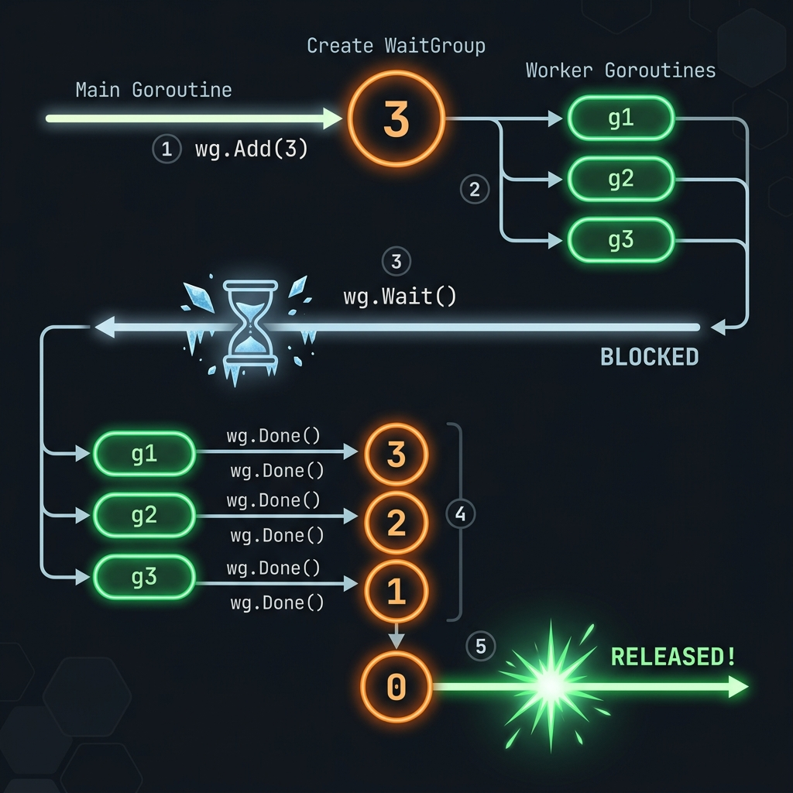

Từ khái niệm cơ bản đến các pattern chuyên sâu trong đồng bộ hóa goroutine — hướng dẫn đầy đủ bằng tiếng Việt dành cho Go developers.
sync.WaitGroup là một primitive đồng bộ hóa (synchronization primitive) trong package sync của Go chuẩn. Nó cho phép một goroutine chờ đợi cho đến khi một nhóm goroutine khác hoàn thành công việc của chúng.
WaitGroup hoạt động như một bộ đếm (counter) nguyên tử (atomic counter). Goroutine chính gọi Add() để tăng bộ đếm, mỗi goroutine worker gọi Done() khi hoàn thành, và Wait() sẽ block cho đến khi bộ đếm về 0.

| Method | Signature | Mô Tả | Lưu Ý |
|---|---|---|---|
|
Add(delta int)
func (wg *WaitGroup) Add(delta int)
|
Add(n) hoặc Add(-n) | Tăng (hoặc giảm) bộ đếm internal đi delta. Thường gọi trước khi spawn goroutine. Delta có thể âm nhưng không được làm counter âm. |
Phải gọi trước khi Wait() |
|
Done()
func (wg *WaitGroup) Done()
|
≡ Add(-1) | Giảm bộ đếm đi 1. Thường được gọi qua defer wg.Done() ở đầu goroutine để đảm bảo luôn được gọi kể cả khi panic. |
Luôn dùng defer |
|
Wait()
func (wg *WaitGroup) Wait()
|
blocking | Block goroutine hiện tại cho đến khi bộ đếm về 0. Nếu counter đã là 0 khi gọi, trả về ngay lập tức. Có thể gọi từ nhiều goroutine cùng lúc. | Thread-safe |
WaitGroup không được copy sau lần sử dụng đầu tiên. Luôn truyền con trỏ *sync.WaitGroup vào goroutine, không được truyền bằng giá trị (value). Go vet sẽ cảnh báo nếu bạn vi phạm quy tắc này.
// Cấu trúc nội bộ (simplified từ Go source code) type WaitGroup struct { noCopy noCopy // Phòng chống copy (go vet) state atomic.Uint64 // High 32 bits = counter, Low 32 bits = waiters sema uint32 // Semaphore cho Wait() goroutines } // Add: tăng counter atomically func (wg *WaitGroup) Add(delta int) { // ... atomic operation trên state // Nếu counter về 0: wake up tất cả goroutines đang Wait() } // Done: tương đương Add(-1) func (wg *WaitGroup) Done() { wg.Add(-1) } // Wait: block bằng runtime semaphore cho đến khi counter = 0 func (wg *WaitGroup) Wait() { // ... atomic increment waiters count // ... block trên runtime_Semacquire(&wg.sema) }
package main import ( "fmt" "sync" ) func main() { var wg sync.WaitGroup // Add(3): báo cho WaitGroup biết có 3 goroutine sẽ chạy wg.Add(3) for i := 0; i < 3; i++ { go func(id int) { defer wg.Done() // Luôn dùng defer để đảm bảo Done được gọi fmt.Printf("Worker %d đang làm việc\n", id) }(i) } // Block cho đến khi cả 3 goroutine gọi Done() wg.Wait() fmt.Println("Tất cả workers đã hoàn thành!") } // Output (thứ tự có thể thay đổi mỗi lần chạy): // Worker 0 đang làm việc // Worker 2 đang làm việc // Worker 1 đang làm việc // Tất cả workers đã hoàn thành!
Gọi wg.Add(1) trước mỗi go statement. Đây là pattern an toàn hơn so với gọi Add(N) một lần, đặc biệt khi số goroutine không cố định.
package main import ( "fmt" "sync" "time" ) func processItem(wg *sync.WaitGroup, item string) { defer wg.Done() time.Sleep(100 * time.Millisecond) fmt.Printf("✓ Xử lý xong: %s\n", item) } func main() { items := []string{"Hà Nội", "TP.HCM", "Đà Nẵng", "Cần Thơ", "Huế"} var wg sync.WaitGroup for _, item := range items { wg.Add(1) // Add TRƯỚC khi spawn — đây là điểm mấu chốt! go processItem(&wg, item) } fmt.Println("⏳ Đang chờ tất cả goroutines...") wg.Wait() fmt.Println("🎉 Hoàn tất tất cả items!") }
package main import ( "fmt" "sync" "time" ) type Job struct { ID int Data string } type Result struct { JobID int Output string Err error } // WorkerPool tạo numWorkers goroutines đọc từ jobs channel func WorkerPool(numWorkers int, jobs <-chan Job) <-chan Result { results := make(chan Result, numWorkers*2) var wg sync.WaitGroup for i := 0; i < numWorkers; i++ { wg.Add(1) go func(workerID int) { defer wg.Done() // Đọc từ jobs channel cho đến khi đóng for job := range jobs { result := Result{ JobID: job.ID, Output: fmt.Sprintf("[worker-%d] processed: %s", workerID, job.Data), } time.Sleep(50 * time.Millisecond) // Giả lập công việc results <- result } }(i) } // Goroutine trung gian: đóng results khi tất cả workers xong go func() { wg.Wait() close(results) // An toàn vì chỉ goroutine này đóng channel }() return results } func main() { // Tạo và gửi 20 jobs jobs := make(chan Job, 20) for i := 1; i <= 20; i++ { jobs <- Job{ID: i, Data: fmt.Sprintf("task-%d", i)} } close(jobs) // Chạy pool với 5 workers results := WorkerPool(5, jobs) // Nhận kết quả (range tự dừng khi channel bị đóng) count := 0 for r := range results { count++ fmt.Println(r.Output) } fmt.Printf("\n✅ Hoàn thành %d jobs\n", count) }
package main import ( "fmt" "sync" "time" ) // FetchResult lưu kết quả của từng HTTP request type FetchResult struct { URL string Status int Duration time.Duration Err error } // FetchAll gọi song song nhiều URL, trả về slice kết quả theo thứ tự func FetchAll(urls []string) []FetchResult { results := make([]FetchResult, len(urls)) var wg sync.WaitGroup for i, url := range urls { wg.Add(1) go func(idx int, u string) { defer wg.Done() start := time.Now() // Giả lập HTTP request với thời gian khác nhau time.Sleep(time.Duration(100+idx*30) * time.Millisecond) // Ghi vào slice tại vị trí cố định — an toàn vì mỗi goroutine // chỉ ghi vào index của riêng nó, không có race condition results[idx] = FetchResult{ URL: u, Status: 200, Duration: time.Since(start), } }(i, url) } wg.Wait() // Chờ tất cả requests hoàn thành return results // Trả về sau khi tất cả goroutines ghi xong } func main() { urls := []string{ "https://api.example.com/users", "https://api.example.com/products", "https://api.example.com/orders", "https://api.example.com/inventory", } start := time.Now() results := FetchAll(urls) total := time.Since(start) for _, r := range results { fmt.Printf("%-45s → %d (%v)\n", r.URL, r.Status, r.Duration) } fmt.Printf("\nTổng thời gian: %v (song song, không tuần tự)\n", total) }
package main import ( "fmt" "sync" ) // Aggregator thu thập kết quả từ nhiều goroutines vào shared map type Aggregator struct { mu sync.Mutex results map[string]int } func NewAggregator() *Aggregator { return &Aggregator{results: make(map[string]int)} } func (a *Aggregator) Record(key string, value int) { a.mu.Lock() defer a.mu.Unlock() a.results[key] += value } func analyzeRegion(region string, agg *Aggregator, wg *sync.WaitGroup) { defer wg.Done() // Giả lập xử lý dữ liệu của region sales := map[string]int{ "Hà Nội": 1500, "TP.HCM": 2300, "Đà Nẵng": 800, } agg.Record(region, sales[region]) fmt.Printf("Đã phân tích: %s\n", region) } func main() { regions := []string{"Hà Nội", "TP.HCM", "Đà Nẵng"} agg := NewAggregator() var wg sync.WaitGroup for _, region := range regions { wg.Add(1) go analyzeRegion(region, agg, &wg) } wg.Wait() fmt.Println("\n📊 Kết quả tổng hợp:") for region, sales := range agg.results { fmt.Printf(" %s: %d đơn\n", region, sales) } }
Kết hợp WaitGroup với context.Context để hỗ trợ cancellation và deadline — đây là pattern quan trọng nhất trong production code.
package main import ( "context" "fmt" "sync" "time" ) func workerWithCtx(ctx context.Context, id int, wg *sync.WaitGroup, results chan<- string) { defer wg.Done() for { select { case <-ctx.Done(): // Context bị cancel hoặc timeout — dọn dẹp và thoát fmt.Printf("Worker %d: nhận tín hiệu dừng (%v)\n", id, ctx.Err()) return default: // Tiếp tục làm việc time.Sleep(200 * time.Millisecond) select { case results <- fmt.Sprintf("worker-%d result", id): case <-ctx.Done(): return } } } } func main() { // Context với timeout 1 giây ctx, cancel := context.WithTimeout(context.Background(), 1*time.Second) defer cancel() results := make(chan string, 50) var wg sync.WaitGroup // Spawn 3 workers for i := 1; i <= 3; i++ { wg.Add(1) go workerWithCtx(ctx, i, &wg, results) } // Goroutine đóng channel khi tất cả workers xong go func() { wg.Wait() close(results) }() // Thu thập kết quả cho đến khi channel đóng count := 0 for r := range results { count++ fmt.Println("→", r) } fmt.Printf("Tổng kết quả nhận được: %d\n", count) }
package main import ( "context" "fmt" "net/http" "os" "os/signal" "sync" "syscall" "time" ) type Server struct { server *http.Server wg sync.WaitGroup // Theo dõi active requests shutdown chan struct{} } func NewServer(addr string) *Server { s := &Server{shutdown: make(chan struct{})} mux := http.NewServeMux() // Middleware: đếm active requests bằng WaitGroup mux.HandleFunc("/", func(w http.ResponseWriter, r *http.Request) { s.wg.Add(1) defer s.wg.Done() // Kiểm tra đang shutdown không select { case <-s.shutdown: http.Error(w, "Server shutting down", 503) return default: } // Xử lý request bình thường time.Sleep(100 * time.Millisecond) // Giả lập xử lý fmt.Fprintf(w, "OK\n") }) s.server = &http.Server{Addr: addr, Handler: mux} return s } func (s *Server) Shutdown(timeout time.Duration) error { // 1. Báo hiệu bắt đầu shutdown close(s.shutdown) // 2. Dừng nhận request mới ctx, cancel := context.WithTimeout(context.Background(), timeout) defer cancel() // 3. Chờ requests đang xử lý hoàn thành done := make(chan struct{}) go func() { s.wg.Wait() close(done) }() select { case <-done: fmt.Println("✅ Graceful shutdown hoàn tất") return s.server.Shutdown(ctx) case <-ctx.Done(): fmt.Println("⚠️ Shutdown timeout — force close") return s.server.Close() } } func main() { s := NewServer(":8080") go s.server.ListenAndServe() fmt.Println("🚀 Server chạy tại :8080") // Lắng nghe tín hiệu OS sigCh := make(chan os.Signal, 1) signal.Notify(sigCh, syscall.SIGINT, syscall.SIGTERM) <-sigCh fmt.Println("\n🛑 Nhận tín hiệu dừng, đang shutdown...") s.Shutdown(30 * time.Second) }
errgroup.Group là phiên bản nâng cao của WaitGroup, tích hợp thêm error handling và context cancellation. Khi một goroutine trả về lỗi, tất cả goroutines khác sẽ nhận được tín hiệu cancel qua context.
package main import ( "context" "fmt" "sync" "time" "golang.org/x/sync/errgroup" ) type DataPipeline struct { maxConcurrency int } func NewPipeline(maxConcurrency int) *DataPipeline { return &DataPipeline{maxConcurrency: maxConcurrency} } // Process chạy tất cả tasks song song với giới hạn concurrency func (p *DataPipeline) Process(ctx context.Context, tasks []int) ([]int, error) { g, ctx := errgroup.WithContext(ctx) g.SetLimit(p.maxConcurrency) // Giới hạn goroutines đồng thời results := make([]int, len(tasks)) var mu sync.Mutex for i, task := range tasks { i, task := i, task // Capture loop variables g.Go(func() error { select { case <-ctx.Done(): return ctx.Err() default: } // Giả lập xử lý với khả năng lỗi time.Sleep(time.Duration(task) * time.Millisecond) result, err := processTask(task) if err != nil { return fmt.Errorf("task %d failed: %w", task, err) } mu.Lock() results[i] = result mu.Unlock() return nil }) } // g.Wait() trả về lỗi đầu tiên xảy ra if err := g.Wait(); err != nil { return nil, fmt.Errorf("pipeline failed: %w", err) } return results, nil } func processTask(n int) (int, error) { if n < 0 { return 0, fmt.Errorf("giá trị âm không hợp lệ: %d", n) } return n * n, nil } func main() { ctx, cancel := context.WithTimeout(context.Background(), 5*time.Second) defer cancel() pipeline := NewPipeline(4) // Tối đa 4 goroutines cùng lúc tasks := []int{50, 100, 30, 80, 20, 60, 40} results, err := pipeline.Process(ctx, tasks) if err != nil { fmt.Printf("Lỗi: %v\n", err) return } for i, r := range results { fmt.Printf("%d² = %d\n", tasks[i], r) } }
package main import ( "fmt" "sync" "sync/atomic" ) // Crawler sử dụng WaitGroup để theo dõi tất cả URLs đang xử lý type Crawler struct { wg sync.WaitGroup visited sync.Map results chan string count atomic.Int64 depth int } func NewCrawler(maxDepth int) *Crawler { return &Crawler{ results: make(chan string, 1000), depth: maxDepth, } } // crawl đệ quy — mỗi URL tìm thấy URL mới và spawn thêm goroutines func (c *Crawler) crawl(url string, currentDepth int) { defer c.wg.Done() // Kiểm tra đã visit chưa (thread-safe) if _, loaded := c.visited.LoadOrStore(url, true); loaded { return } if currentDepth > c.depth { return } c.count.Add(1) c.results <- url // Giả lập tìm thấy 2 URLs mới từ mỗi trang childURLs := []string{ fmt.Sprintf("%s/page1", url), fmt.Sprintf("%s/page2", url), } for _, childURL := range childURLs { // CRITICAL: Add phải được gọi từ goroutine cha, // trước khi spawn goroutine con c.wg.Add(1) go c.crawl(childURL, currentDepth+1) } } func (c *Crawler) Run(rootURL string) { c.wg.Add(1) go c.crawl(rootURL, 0) // Đóng channel khi tất cả crawlers hoàn thành go func() { c.wg.Wait() close(c.results) }() } func main() { crawler := NewCrawler(3) crawler.Run("https://example.com") visited := 0 for url := range crawler.results { visited++ fmt.Printf("[%3d] %s\n", visited, url) } fmt.Printf("\nTổng: %d URLs đã crawl\n", crawler.count.Load()) } // ⚠️ Quy tắc quan trọng cho recursive WaitGroup: // wg.Add() phải được gọi TRƯỚC khi goroutine cha thoát (trước wg.Done()) // Nếu gọi sau, wg.Wait() có thể return sớm khi counter tạm thời về 0
wg.Add(1) trong goroutine cha, trước khi gọi wg.Done(). Nếu không, bộ đếm có thể tạm thời về 0 giữa lúc cha Done() và con Add(), khiến Wait() return sớm bất ngờ — đây là race condition tinh vi nhất của WaitGroup.
package main import ( "fmt" "sync" "time" ) // PhaseRunner chạy công việc theo các giai đoạn tuần tự type PhaseRunner struct { wg sync.WaitGroup } // runPhase chạy một tập tasks song song và chờ tất cả xong trước khi tiếp tục func (pr *PhaseRunner) runPhase(phaseName string, tasks []func()) { fmt.Printf("🔷 Phase '%s' bắt đầu (%d tasks)\n", phaseName, len(tasks)) start := time.Now() for _, task := range tasks { pr.wg.Add(1) task := task // capture go func() { defer pr.wg.Done() task() }() } pr.wg.Wait() // Chờ toàn bộ phase xong // An toàn để tái sử dụng wg khi tất cả goroutines đã gọi Done() fmt.Printf(" ✓ Phase '%s' xong trong %v\n", phaseName, time.Since(start)) } func main() { pr := &PhaseRunner{} // Phase 1: Thu thập dữ liệu pr.runPhase("Thu thập", []func(){ func() { time.Sleep(50 * time.Millisecond); fmt.Println(" fetch users") }, func() { time.Sleep(80 * time.Millisecond); fmt.Println(" fetch orders") }, func() { time.Sleep(30 * time.Millisecond); fmt.Println(" fetch products") }, }) // Phase 2: Xử lý (chỉ bắt đầu sau khi Phase 1 xong) pr.runPhase("Xử lý", []func(){ func() { time.Sleep(100 * time.Millisecond); fmt.Println(" process batch A") }, func() { time.Sleep(70 * time.Millisecond); fmt.Println(" process batch B") }, }) // Phase 3: Lưu trữ (chỉ sau khi Phase 2 xong) pr.runPhase("Lưu trữ", []func(){ func() { time.Sleep(40 * time.Millisecond); fmt.Println(" save to DB") }, func() { time.Sleep(60 * time.Millisecond); fmt.Println(" update cache") }, }) fmt.Println("\n🎉 Pipeline hoàn tất!") }
// SAI: truyền bằng giá trị func worker(wg sync.WaitGroup) { defer wg.Done() // Copy! Không có tác dụng } var wg sync.WaitGroup wg.Add(1) go worker(wg) // Truyền copy wg.Wait() // Deadlock!
// ĐÚNG: truyền con trỏ func worker(wg *sync.WaitGroup) { defer wg.Done() // Đúng WaitGroup } var wg sync.WaitGroup wg.Add(1) go worker(&wg) // Truyền pointer wg.Wait() // ✓ OK
// SAI: Add bên trong goroutine var wg sync.WaitGroup go func() { wg.Add(1) // Race! Wait có thể đã chạy defer wg.Done() // ... work ... }() wg.Wait() // Có thể return TRƯỚC Add()
// ĐÚNG: Add TRƯỚC khi spawn var wg sync.WaitGroup wg.Add(1) // Add trước go statement go func() { defer wg.Done() // ... work ... }() wg.Wait() // ✓ Đảm bảo thấy Add
// SAI: Done nhiều hơn Add var wg sync.WaitGroup wg.Add(2) wg.Done() // counter = 1 wg.Done() // counter = 0 wg.Done() // PANIC: counter < 0 // panic: sync: negative WaitGroup counter
// ĐÚNG: Add = Done (luôn dùng defer) var wg sync.WaitGroup for i := 0; i < 3; i++ { wg.Add(1) go func() { defer wg.Done() // defer đảm bảo luôn chạy // ... work ... }() } wg.Wait() // ✓ Add(3) = Done×3
// SAI: closure bắt biến vòng lặp var wg sync.WaitGroup for i := 0; i < 5; i++ { wg.Add(1) go func() { defer wg.Done() fmt.Println(i) // Luôn in 5! }() } wg.Wait()
// ĐÚNG: truyền qua parameter var wg sync.WaitGroup for i := 0; i < 5; i++ { wg.Add(1) go func(id int) { defer wg.Done() fmt.Println(id) // In đúng giá trị }(i) // Truyền i vào parameter } wg.Wait()
Khi goroutine A đang chạy, nếu A gọi wg.Done() rồi mới spawn goroutine B với wg.Add(1), có khoảnh khắc counter = 0 trong khi B chưa bắt đầu. Điều này khiến wg.Wait() return sớm. Luôn gọi wg.Add(1) TRƯỚC khi spawn goroutine con, và TRƯỚC khi gọi wg.Done() của goroutine cha.
| Primitive | Khi Nào Dùng | Error Handling | Cancellation | Concurrency Limit | Reusable |
|---|---|---|---|---|---|
| sync.WaitGroup | Chờ nhóm goroutines | ✗ Không | ✗ Cần context thêm | ✗ Cần semaphore thêm | ✓ Sau Wait() |
| errgroup.Group | Goroutines có thể fail | ✓ Propagate lỗi đầu tiên | ✓ Auto-cancel trên lỗi | ✓ SetLimit() | ✗ Dùng một lần |
| channel + close | Fan-out với results | △ Gửi trong message | △ Qua context/close | ✓ Buffered channel | ✓ Tạo channel mới |
| sync.Mutex | Bảo vệ shared state | ✗ | ✗ | ✗ | ✓ |
| sync.Once | Chạy một lần duy nhất | ✗ | ✗ | ✗ | ✗ |
sync.WaitGroup khi bạn chỉ cần chờ goroutines hoàn thành và không quan tâm đến lỗi. Dùng errgroup.Group khi các goroutines có thể thất bại và bạn muốn xử lý lỗi đầu tiên + tự động cancel các goroutines còn lại.
package main import ( "context" "errors" "fmt" "log/slog" "sync" "sync/atomic" "time" ) // Pipeline production-ready: WaitGroup + context + errors + metrics type Pipeline[T any, R any] struct { numWorkers int processor func(ctx context.Context, item T) (R, error) errorHandler func(item T, err error) // Metrics processed atomic.Int64 failed atomic.Int64 } func NewPipeline[T any, R any]( numWorkers int, processor func(context.Context, T) (R, error), errorHandler func(T, error), ) *Pipeline[T, R] { return &Pipeline[T, R]{ numWorkers: numWorkers, processor: processor, errorHandler: errorHandler, } } type PipelineResult[R any] struct { Results []R Processed int64 Failed int64 Duration time.Duration } func (p *Pipeline[T, R]) Run(ctx context.Context, items []T) *PipelineResult[R] { start := time.Now() // Channels jobsCh := make(chan T, p.numWorkers*2) resultsCh := make(chan R, p.numWorkers*2) var wg sync.WaitGroup // Spawn workers for i := 0; i < p.numWorkers; i++ { wg.Add(1) workerID := i go func() { defer wg.Done() defer func() { if r := recover(); r != nil { slog.Error("worker panic", "worker", workerID, "panic", r) } }() for item := range jobsCh { select { case <-ctx.Done(): return default: } result, err := p.processor(ctx, item) if err != nil { if !errors.Is(err, context.Canceled) { p.failed.Add(1) p.errorHandler(item, err) } continue } p.processed.Add(1) select { case resultsCh <- result: case <-ctx.Done(): return } } }() } // Goroutine đóng resultsCh khi workers xong go func() { wg.Wait() close(resultsCh) }() // Gửi jobs (trong goroutine riêng để không block) go func() { defer close(jobsCh) for _, item := range items { select { case jobsCh <- item: case <-ctx.Done(): return } } }() // Thu thập kết quả var results []R for r := range resultsCh { results = append(results, r) } return &PipelineResult[R]{ Results: results, Processed: p.processed.Load(), Failed: p.failed.Load(), Duration: time.Since(start), } } func main() { ctx, cancel := context.WithTimeout(context.Background(), 10*time.Second) defer cancel() // Tạo pipeline xử lý số nguyên → bình phương pipeline := NewPipeline( 4, func(ctx context.Context, n int) (int, error) { if n < 0 { return 0, fmt.Errorf("số âm: %d", n) } time.Sleep(10 * time.Millisecond) return n * n, nil }, func(item int, err error) { slog.Warn("xử lý thất bại", "item", item, "error", err) }, ) items := []int{1, -2, 3, 4, -5, 6, 7, 8, 9, 10} result := pipeline.Run(ctx, items) fmt.Printf("✅ Xử lý: %d | ❌ Lỗi: %d | ⏱ Thời gian: %v\n", result.Processed, result.Failed, result.Duration) fmt.Printf("Kết quả: %v\n", result.Results) }